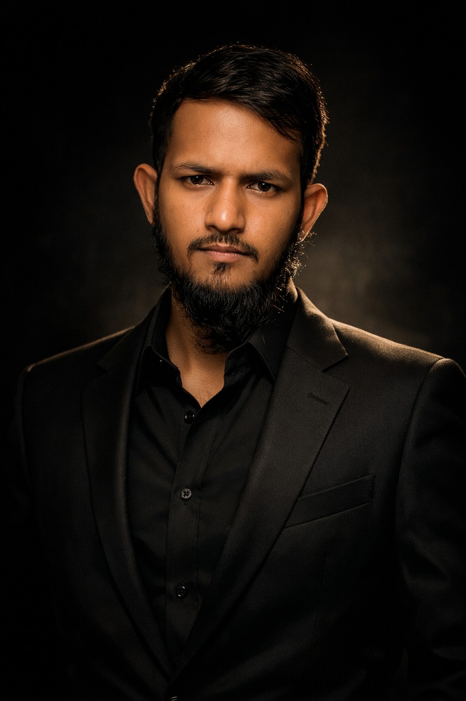

Pipeline engineering01
Unified data from 8+ sources
Built 5+ end-to-end GCP pipelines into BigQuery, processing millions of records and cutting analyst data-prep time by 40%.
I’m Shaik Mohammed Ashfaq — a cloud data engineer building scalable pipelines and analytics-ready datasets across GCP, AWS, and Databricks.
Engineering outcomes that made data faster to access, easier to trust, and more useful to analytics teams.
Built 5+ end-to-end GCP pipelines into BigQuery, processing millions of records and cutting analyst data-prep time by 40%.
Optimized 30+ SQL queries, reducing report generation from 4 minutes to 45 seconds. The improvement was adopted team-wide.
Created a reusable validation framework that improved trust in production datasets and eliminated manual QA cycles.
Resolved 15+ performance bottlenecks across AWS services, contributing to a 20% reduction in pipeline execution time within 8 weeks.
I turn complex, raw data into dependable foundations for analytics and better business decisions.
I’m Shaik Mohammed Ashfaq, a Data Engineer with 3 years of experience building and optimizing scalable ETL/ELT pipelines across GCP, AWS, and Databricks.
At Accenture, I partnered with analytics and business teams to deliver reliable, analytics-ready data. I enjoy making pipelines more efficient, building quality checks into the workflow, and documenting systems so teams can work with confidence.
Based in Hyderabad, Telangana. GCP Associate Cloud Engineer certified.

Hands-on delivery across enterprise data engineering, cloud pipelines, and analytics enablement.
Cloud platforms, data processing tools, and engineering practices I’ve used to deliver reliable data products.
Python · Pandas · NumPy · PySpark · Apache Spark · SQL
BigQuery · Dataflow · Cloud Composer · Apache Airflow · Pub/Sub · Cloud Storage · Vertex AI
Redshift · S3 · Glue · Lambda · EC2 · RDS
ETL/ELT · Data modeling · Data quality · Terraform · Parquet · JSON · Cloud SQL · Bigtable · MySQL
A foundation in cloud engineering, data platforms, and applied AI.
For data engineering opportunities or collaboration, reach out by email or phone.